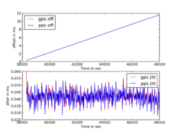

Configuring for GPS Location and Time Synchronization
Network Time Protocol (NTP)
NTP is a time synchronizing protcol.It synchronizes the time of the machines on a network by using the set of time servers as its reference.
Need for time synchronization
Most of us believe that the computer clocks are accurate,being unaware of the fact that the crystal oscillator that is being used in the computer clocks drift each day because it is sensitive to temperature and other things.It is because of this reason there is a necessity for those organizations to synchronize their computers clocks who requires time accuracy nearest to seconds.
Importance of Time Synchronization
In today's era time synchronization plays a critical role in managing or debugging things over the network as each event requires time stamp.Following are the areas where time synchronization is critical:
1.Transaction Management 2.Billing Services 3.Detecting the fault over network
Basic Features of NTP
- NTP also requires some time reference clock with whose time it can synchronize the clocks of other computers on the netwrok.It uses UTC as reference time.
- NTP selects the best among all defined time servers to get synchronize to.It selects the one from which it is receiving the reply in lesser time(i.e. for whom the roundtrip time is least )
- If the network is temporarily not available then NTP uses previous measurements to get the current time.
Installing and Configuring NTP for GPS NMEA and PPS
To get accurate time, we use the GPS Module Navika100 GPS NMEA messages and 1 PPS signal as inputs and feed it to a NTP server running on the Beaglebone black.
This page describes how it is done. The overall architecture is like this: NTP runs as a daemon (ntpd). It receives inputs from servers (pool.ntp.org, etc.), and NMEA drivers.
Installing NTP and setting up a NTP server
Note:All commands are executed as root on Beaglebone Black unless mentioned otherwise.
Basic initial configuration:
- BBB should be connected to internet
- BBB should be running debian wheezy
- kernel should have the pps support
Before configuring GPS with NTP first install the ntp package :
login as root using
$ sudo su
install ntp
$ apt-get install ntp
Change the configuration file of ntp on Beaglebone Black to include the servers according to your time zone to obtain the time.
$ nano /etc/ntp.conf
Add the ntp server as per your location from NTP Pool Servers.
If your time zone is Asia and in Asia you are in India then add the following in ntp.conf just after the section where 4 servers from debian are already mentioned and by default commented. Uncomment the first server from that list, to look like this :
server 0.debian.pool.ntp.org
#server 1.debian.pool.ntp.org iburst
#server 2.debian.pool.ntp.org iburst
#server 3.debian.pool.ntp.org iburst
server 0.in.pool.ntp.org
server 3.asia.pool.ntp.org
server 0.asia.pool.ntp.org
Now Save and exit.
Restart ntp using
$ /etc/init.d/ntp restart
To check the ntp output:
$ ntpq -p
Configuring GPS NMEA UART port and PPS GPIO to work with Navika 10 GPS Module
Go to the following directory for enabling UART port and configuring PPS GPIO
cd /lib/firmware
Now ensure that the BBB Vayu overlay is already present in the directory (BBB_VAYU-00A0.dtbo)
ls
If it is not present, please download and copy the overlay from here
Apply the following device tree overlays :
$ echo BB-UART4 > /sys/devices/bone_capemgr.9/slots
$ echo BBB_VAYU > /sys/devices/bone_capemgr.9/slots
To check that the overlays have been properly applied , do following :
i. Check slots for device trees implemented
$ cat /sys/devices/bone_capemgr.9/slots
The output should be like this :
0: 54:PF---
1: 55:PF---
2: 56:PF---
3: 57:PF---
4: ff:P-O-L Bone-LT-eMMC-2G,00A0,Texas Instrument,BB-BONE-EMMC-2G
5: ff:P-O-L Bone-Black-HDMI,00A0,Texas Instrument,BB-BONELT-HDMI
7: ff:P-O-L Override Board Name,00A0,Override Manuf, BB-UART4
8: ff:P-O-L Override Board Name,00A0,Override Manuf, BBB_VAYU
L indicates that the device tree overlay is applied.
ii To check that PPS GPIO has been configured, check the system log messages and list of devices :
$ dmesg
It should show pps pps1: Registered IRQ 171 as PPS source in the messages.
Now, to read the GPS NMEA packets and see their raw format,do the following :
Note1:Ensure that GPS Antenna has been connected to correct antenna SMA connector.
Note2:GPS Fix Led takes some time before it starts blinking in sync with 1 pps signal.
Note3:For better and faster results, keep GPS antenna under open sky or outdoors. Indoors, GPS antenna may take time to get the sync as well as give accurate NMEA messages.
Set the following port settings for UART4 to read the GPS NMEA messages
$ stty -F /dev/ttyO4 19200 raw
Read the data on the port and output should be something like :
$ cat /dev/ttyO4
$GPGSA,A,3,02,04,12,25,24,05,10,,,,,,02.4,01.1,02.1*07
$GPGLL,2834.2631,N,07720.5426,E,102954.00,A,A*6E
$GPGSV,3,1,07,02,71,345,50,04,40,038,48,12,62,315,47,25,20,321,45*7F
$GPGSV,3,2,07,05,41,167,23,10,48,086,23,24,24,236,30,,,,*48
$GPGSV,3,3,07,,,,,,,,,,,,,,,,*7E
Using Xgps and Gpsd to work with Navika
Using Gpsd
Gpsd allows a direct connection to a GPS receiver, in this case the Navika module, and collecting NMEA messages directly from the serial port. This enables NMEA messages to be then picked up by multiple clients such as xgps, cgps and also ntpd.
- Check first that Navika is configured correctly and gps data is reaching the /dev/ttyO4 port.
cat /dev/ttyO4
You should see NMEA messages appearing on stdout.
- Starting GPSD can be done interactively by
gpsd /dev/ttyO4 -D 8 -N -b
Or you may set it up as a service as well to start automatically. Once gpsd starts, clients may connect to gpsd simultaneously.
For enabling NMEA messages in NTP, add the following to /etc/ntp.conf:
server 127.127.28.0 minpoll 4 maxpoll 4
fudge 127.127.28.0 time1 0.420 refid GPS
server 127.127.28.1 minpoll 4 maxpoll 4 prefer
fudge 127.127.28.1 refid GPS1
and then restart ntpd.
To run and see xgps, type
xgps
A screenshot is shown below:
To run and use cgps, type
cgps
A screenshot is shown below:
Statistics collection
If statistics collection is enabled in /etc/ntp.conf file, you can see the resultant output logged in peerstats file. This gives both offset and jitter values for each reference clock (including time servers from the ntp.org pool). By looking specifically at the NMEA reference clock, we can get the gps jitter and gps offset values. Separately, it is also possible to compare the effect of pps on the basic gps signal (see Getting PPS and GPS to work with NTP server for details).
Getting PPS and GPS to work with NTP server
This procedure requires Kernel with PPS drivers enabled and also PPS configured for GPIO. To ensure that PPS drivers are there in the kernel by following the steps:
login as root (ignore if you are already at root) check in the /dev directory whether pps drivers are there or not
$ ls /dev/pps*
you should see pps0 in the list
Note: If pps0 is not present, please follow Add USB and PPS drivers to update the kernel to include PPS drivers.
Install the following packages
$ apt-get install ncurses-dev
$ apt-get install bzip2
$ apt-get install module-init-tools
$ apt-get install initramfs-tools
$ apt-get install procps
$ apt-get install fakeroot
$ apt-get install zlib1g-dev
$ apt-get install git-core
$ apt-get install libblkid-dev
$ apt-get install kernel-package
Note: In latest kernel versions, it is possible few packages mentioned above are already installed.
Obtain the linuxpps userland tools
$ cd /usr/src
$ git clone git://www.linuxpps.org/git/pps-tools pps-tools
Copy the timepps.h file so ntpd gets built with pps support
$ cd /usr/include
$ cp /usr/src/pps-tools/timepps.h timepps.h
Build the ppstest tool
$ cd /usr/src/pps-tools
$ make
Obtain and build ldattach
$ cd /usr/src
$ mkdir ldattach
$ cd ldattach
$ wget http://www.kernel.org/pub/linux/utils/util-linux-ng/v2.14/util-linux-ng-2.14.2.tar.bz2
$ tar jxf util-linux-ng-2.14.2.tar.bz2
$ cd util-linux-ng-2.14.2
$ ./configure
$ make
Note : If the link http://www.kernel.org/pub/linux/utils/util-linux-ng/v2.14/util-linux-ng-2.14.2.tar.bz2 doesn't work,then try using the link http://www.artfiles.org/kernel.org/pub/linux/utils/util-linux-ng/v2.14/util-linux-ng-2.14.2.tar.bz2. If util-linux is unavailable from both locations, please download the same from here util-linux-ng-2.14.2.tar.bz2.
Copy ldattach
$ cd sys-utils
$ cp ldattach /usr/sbin/
Create pps port
$ ldattach pps /dev/pps1
Note: Ignore any errors here
Test PPS (pps0 or pps1 )
$ cd /usr/src/pps-tools/
$ ./ppstest /dev/pps1
The output should be something like this :
trying PPS source "/dev/pps1"
found PPS source "/dev/pps1"
ok, found 1 source(s),now start fetching data...
source 0 -assert 1351501153.999956346, sequence: 4781 - clear 0.00000000, sequence: 0
source 0 -assert 1351501154.999954601, sequence: 4782 - clear 0.00000000, sequence: 0
source 0 -assert 1351501155.999951856, sequence: 4782 - clear 0.00000000, sequence: 0
Note : PPS support can be checked even without the specific hardware by using ktimer which is there in the kernel. It can be checked on /dev/pps0.Therefore,always check the pps data on /dev/pps1 which is coming from the Navika100 module because on /dev/pps0 the pps data would be there even if the Navika100 has not got the GPS fix.
Now having NTP daemon perform the following steps
$ mkdir /usr/src/ntp (Make a convenient working directory , if you don't already have one)
$ cd ntp
$ apt-get install libcap-dev
$ wget http://www.eecis.udel.edu/~ntp/ntp_spool/ntp4/ntp-4.2/ntp-4.2.6p5.tar.gz
$ tar xvfz ntp-4.2.6p5.tar.gz
$ cd ntp-4.2.6p5
$ ./configure
$ make
$ make install
NMEA reference clock driver directly accesses the serial port. Expects that the port will be numbered /dev/gpsX and /dev/gpsppsX, where X is 0,1,2... Corresponding to each X, it creates a pseudo-ip 127.127.20.X
So,make the soft links for ntpd to read gps nmea and 1 pps as input
$ ln -s /dev/ttyO4 /dev/gps1
$ ln -s /dev/pps1 /dev/gpspps1
Configure the ntp.conf file so that ntpd(ntp daemon) can read 1pps and gps data
$ nano /etc/ntp.conf
Edit the file as :
-
Uncomment statsdir /var/log/ntpstats
-
Add the ntp server as per your location from NTP Pool Servers
Note: This step is already done in section 2, servers should already be present
- Add support for GPS and PPS ( add them just after the list of servers)
# NMEA refclock driver directly from serial port server 127.127.20.1 mode 47 minpoll 4 iburst prefer true fudge 127.127.20.1 flag1 1 flag2 0 flag3 0 flag4 0 time1 0.00 refid GPS # ATOM PPS driver directly from interrupt through /dev/pps1 server 127.127.22.1 mode 47 minpoll 4 maxpoll 4 iburst true fudge 127.127.22.1 flag2 0 flag3 0 flag4 1 time1 0.0 refid PPS
Save and Exit
Note : The direct serial port driver 20.0 or 20.1 from NMEA are different from 127.127.28.1 the one mentioned above.
Now, edit the following file:
$ nano /etc/init.d/ntp
Edit PATH in the file to add /usr/local/bin to look like :
PATH=/usr/local/bin:/sbin:/bin:/usr/sbin:/usr/bin
And change the path of DAEMON to following :
DAEMON=/usr/local/bin/ntpd
Save and Exit
Commands for NTP server
$ service ntp start
$ service ntp stop
$ service ntp restart
To check whether ntpd is working with GPS NMEA and PPP or not :
$ ntpq -p
The output should be something like :
remote refid st t when poll reach delay offset jitter
-120-88-47-10.in 103.1.106.69 2 u 43 64 377 51.624 537.091 1.517
+27.114.150.13 130.133.1.10 2 u 36 64 377 222.386 481.023 0.583
+77.235.14.49 131.188.3.220 2 u 41 64 377 284.982 510.672 1.408
*GPS_NMEA(1) .GPS. 0 l 10 16 377 0.000 1.996 0.204
oPPS(1) .PPS. 0 l 9 16 377 0.000 -469.94 0.191
Note:
1.If GPS_NMEA(1) and PPS(1) are not visible in the list of servers as shown above, just restart the NTP Server. 2.The '*' in front of GPS shows that the peer has been declared the system peer and lends its variables to the system variables. 3.The 'o' shows that the peer has been declared the system peer and lends its variables to the system variables. However,the actual system synchronization is derived from a pulse-per-second(PPS) signal,either indirectly via the PPS reference clock or directly via kernel interface.
As soon as the ntp gets synchronized with the pps the jitter in the time starts decreasing and becomes stable after some time.
Showing the Jitter and Offset of 1PPS when NTP gets synchronized with it
Note on NTPd and its settings
NTPd is certainly not the only way to use the GPS and PPS inputs although it is indeed pretty good. Considering the number of knobs it has, one must understand its workings to get good results. The settings used in /etc/ntp.conf are crucial in deciding this and can take quite a lot of effort to set up properly. If you're using ntpd, it is better to use the ntp clock discipline instead of the kernel discipline. Also, choosing the right time server is important as the offset and jitter of the external time server clock take a long time to be mitigated locally. These points become clear if you carefully study the following figures for some long term data as ntpd slowly settles.
